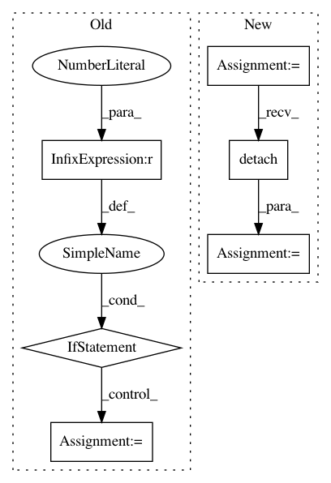

cc8880d39c4a97ed5af943e623d6d02e26f1ebad,models/AttModel.py,AttModel,_sample,#AttModel#Any#Any#Any#Any#,194
Before Change
sampleLogprobs, it = torch.max(logprobs.data, 1)
it = it.view(-1).long()
else:
if temperature == 1.0:
prob_prev = torch.exp(logprobs.data) // fetch prev distribution: shape Nx(M+1)
else:
// scale logprobs by temperature
prob_prev = torch.exp(torch.div(logprobs.data, temperature))
it = torch.multinomial(prob_prev, 1)
sampleLogprobs = logprobs.gather(1, it) // gather the logprobs at sampled positions
it = it.view(-1).long() // and flatten indices for downstream processing
After Change
sampleLogprobs, it = torch.max(logprobs.data, 1)
it = it.view(-1).long()
else:
logprobs = logprobs / temperature
it = torch.distributions.Categorical(logits=logprobs.detach()).sample()
sampleLogprobs = logprobs.gather(1, it.unsqueeze(1)) // gather the logprobs at sampled positions
// stop when all finished
if t == 0:
In pattern: SUPERPATTERN
Frequency: 3
Non-data size: 6
Instances
Project Name: ruotianluo/self-critical.pytorch
Commit Name: cc8880d39c4a97ed5af943e623d6d02e26f1ebad
Time: 2019-04-18
Author: rluo@ttic.edu
File Name: models/AttModel.py
Class Name: AttModel
Method Name: _sample
Project Name: Scitator/catalyst
Commit Name: ce9ef7662cad1788017899cda41dbca3cc396b71
Time: 2019-03-22
Author: grinchuk.alexey@gmail.com
File Name: catalyst/rl/offpolicy/sampler.py
Class Name: Sampler
Method Name: run